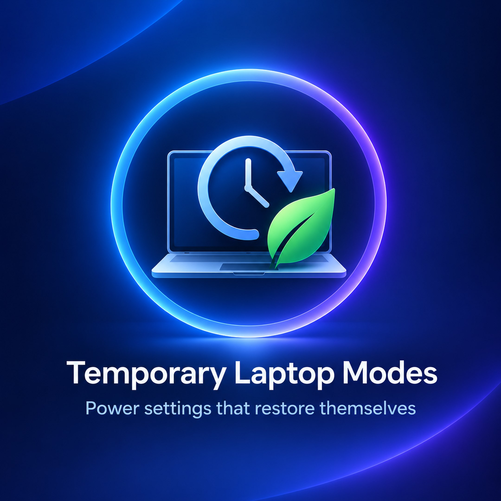

Temporary Laptop Modes: เลือกโหมดให้เหมาะกับงาน แล้วคืนค่าพลังงานให้อัตโนมัติ
{kind=link}

Temporary Laptop Modes คือผลิตภัณฑ์ตัวแรกของผมที่ไม่ใช่เว็บแอปพลิเคชัน พัฒนาขึ้นเพื่อแก้ปัญหาที่พบเองจากการใช้โน้ตบุ๊กเครื่องเดียวทั้งสอน ประชุม นำเสนอ เขียนโปรแกรม และรันงานหนัก
แต่ละสถานการณ์ต้องการการจัดการพลังงานไม่เหมือนกัน บางครั้งต้องการประสิทธิภาพเต็มที่ บางครั้งต้องประหยัดแบตเตอรี่ บางครั้งไม่อยากให้จอดับ และบางครั้งต้องการปล่อยงานให้รันต่อโดยไม่เปิดหน้าจอทิ้งไว้
เลือกโหมดจาก System Tray ตามงานตรงหน้า
Focus เปิดจอและเครื่องค้างไว้ เหมาะกับการเขียน อ่าน หรือเฝ้าดู Dashboard ขณะที่ Coding รักษาความลื่นไหลสำหรับงานพัฒนาโปรแกรม โดยไม่ปล่อยให้ CPU ทำงานหนักเกินความจำเป็น
Presentation ป้องกันหน้าจอดับระหว่างสอน ประชุม หรือนำเสนอ ส่วน Battery ลดการใช้พลังงานเมื่อเดินทางหรือไม่ได้เสียบปลั๊ก
Quiet ปล่อยงานระยะยาวให้ทำต่อได้ ขณะที่หน้าจอดับและเครื่องลดเสียงรบกวน และ Compile Boost เปลี่ยนไปใช้ประสิทธิภาพสูงชั่วคราวสำหรับการ Compile, Build หรือ Test งานขนาดใหญ่
เปลี่ยนชั่วคราว แล้วคืนค่าเดิมให้เอง
หัวใจของโปรแกรมไม่ใช่เพียงการสลับ power settings แต่คือการทำให้การเปลี่ยนนั้นชั่วคราวและย้อนกลับได้ ก่อนปรับค่า โปรแกรมจะบันทึกการตั้งค่าเดิมของเครื่องไว้ แล้วคืนค่าเมื่อหมดเวลา เมื่อเสียบสายไฟกลับ หรือเมื่อผู้ใช้เลือก Restore normal
ไอคอนใน System Tray แสดงโหมดที่กำลังใช้อยู่ และโปรแกรมแจ้งเตือนเมื่อคืนค่าก่อนหน้าเรียบร้อย ผู้ใช้จึงไม่ต้องจำว่าเคยเปลี่ยนอะไร หรือไล่แก้การตั้งค่าหลายหน้าหลังจบงาน
ผลิตภัณฑ์จากปัญหาเล็ก ๆ ที่เกิดซ้ำทุกวัน
Temporary Laptop Modes เริ่มจาก pain point ส่วนตัว แต่ปัญหานี้ไม่ได้เกิดกับคนคนเดียว ผู้ใช้โน้ตบุ๊กจำนวนมากสลับบทบาทระหว่างทำงานหน้าจอ ประชุม เดินทาง เขียนโปรแกรม และรันงานยาวในเครื่องเดียวกัน
การออกแบบจึงไม่ได้พยายามเพิ่มตัวเลือกทางเทคนิคให้มากที่สุด แต่แปลงการตั้งค่าหลายจุดให้เป็นโหมดที่ตั้งชื่อตามสถานการณ์จริง เลือกได้ง่าย ใช้เท่าที่จำเป็น และกลับสู่สภาพเดิมโดยไม่ทิ้งภาระไว้ให้ผู้ใช้
พร้อมดาวน์โหลดจาก Microsoft Store
แอปเปิดให้ดาวน์โหลดฟรีสำหรับ PC ที่ใช้ Windows 10 เวอร์ชัน 17763.0 ขึ้นไป หากลองใช้แล้วพบปัญหาหรือมีข้อเสนอแนะ สามารถส่งความคิดเห็นกลับมาได้ รุ่นแรกนี้เริ่มจากปัญหาที่ผมพบเอง และหวังว่าจะช่วยคนที่ใช้โน้ตบุ๊กทำงานหลายรูปแบบเช่นเดียวกัน
ดาวน์โหลดสำหรับ Windows Temporary Laptop Modes ดาวน์โหลดและติดตั้งฟรีจาก Microsoft Store